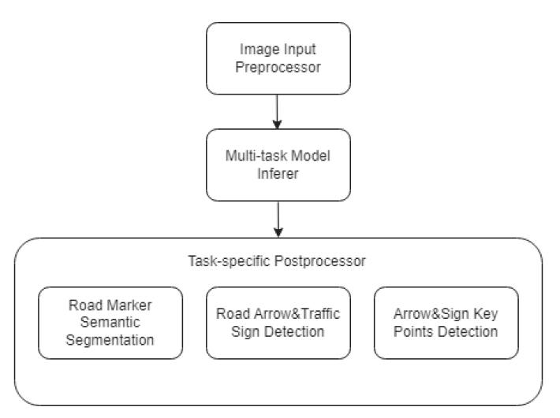
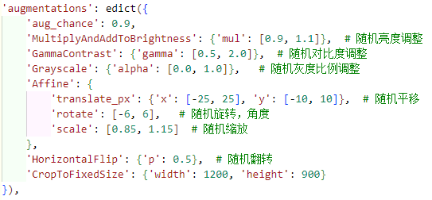
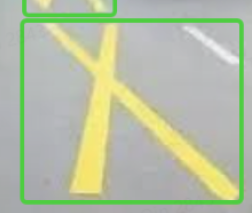
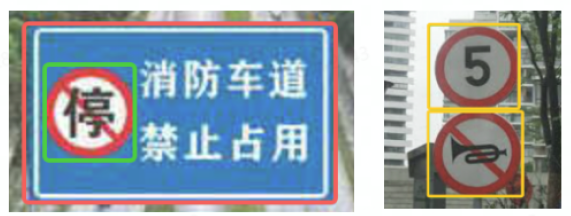
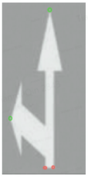
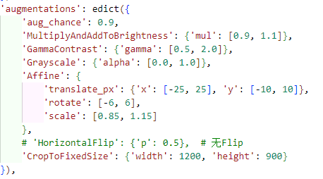
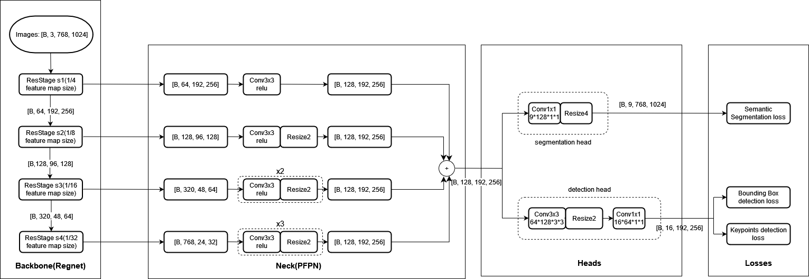

95_WR MS5 Road Marker
Module task
The Mapdl module is to meet the needs of Wave3 Map Construction & Localization.

The Mapdl module is a simple multi -tasking module, which contains two sub -tasks, one is a semantic division task, which is used to divide different types of Road Markers on the pavement; the other task is to detect the task, which will detect the road arrows and roadside signs by detecting the road arrows and roadside signs, and it will also be detected, and the roadside signs will be detected, and the roadside signs will be detected, and the roadside signs will be detected, and the roadside signs will be detected, and the roadside signs will be detected.At the same time, the above key points information is detected for assistance positioning and building maps.
Module dataset
Model input: BATCHED RGB Images of Front Cameras.
Segmentation: MS5 data volume ( 49956/1705）
Unified into 8 Classes:
ARROW
LANE_LINE_MARKING
ROAD_TEXT
ZEBRA_CROSSING_BODY
YELLOW_MESH
DIAMOND
DECELERATION_MARKING
OTHER
Data pre -processing:

DETECTION: MS5 data volume ( 131275/1911）
4 Classes BBox
 ARROW_BOX
TRAFFIC_SIGN_PHYSICAL_BOX
TRAFFIC_SIGN_STANDALONE_BOX
TRAFFIC_SIGN_CLASSIFICATION_BOX
4 classes Keypoints
ARROW_START_POINT_LEFT
ARROW_START_POINT_RIGHT
ARROW_END_POINT
TRAFFIC_SIGN_POINT
Pre -processing

Model Design && DAG
Backbone: Regnet
Neck: PFPN
Head:
Segmentation Head
Detection Head (Centernet Head)

AOS code
Compared with the MS4, the AOS part is compared to NO Modification, and the main implementation points are as follows:
Initialize Mapnet, run the model to get the test results.
The results can be visual.
The packaging results to the corresponding Port MSG and sending MSG.
MS5 acceptance summary (comparison MS4)
|
MapNet@MS5 |
Segmentation |
Detection |
Remark |
|
|
Design Doc/User Manuel |
|
|
||
|
python Training |
Training code |
|
|
|
|
Quantity of data sets |
|
|
|
|
|
AOS code |
|
|
|
|
|
other problems |
|
|||